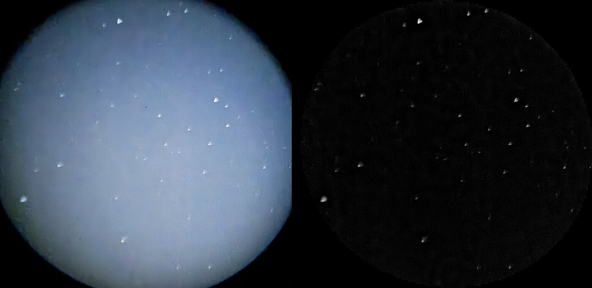
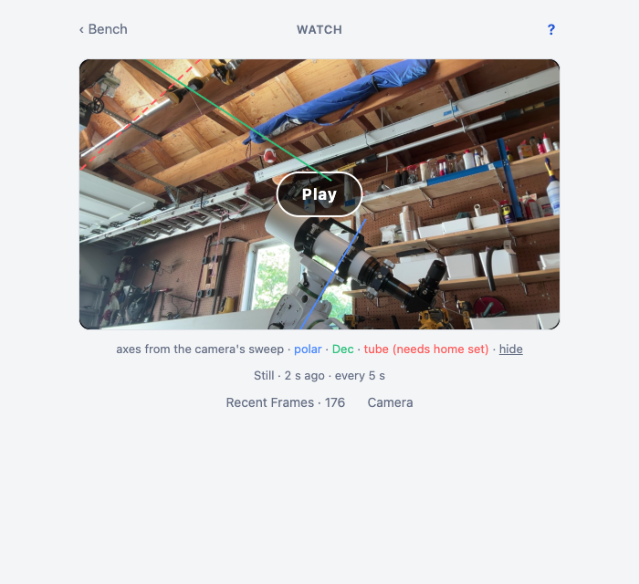
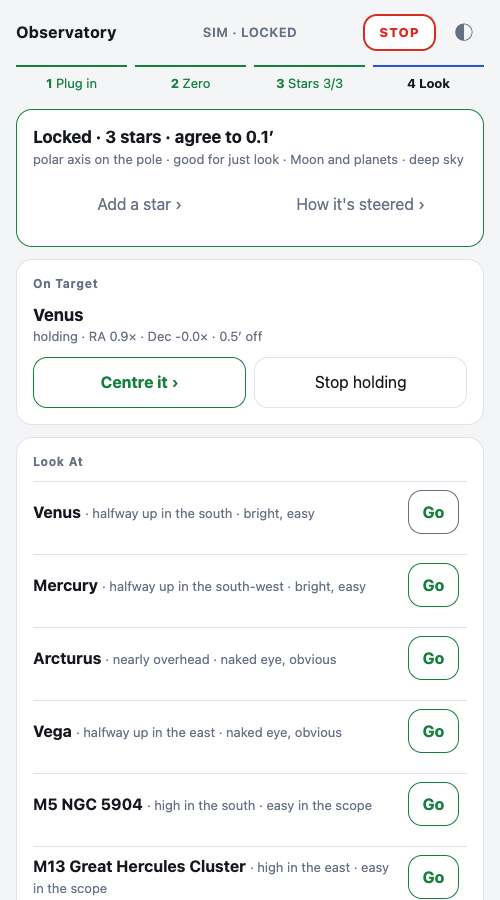
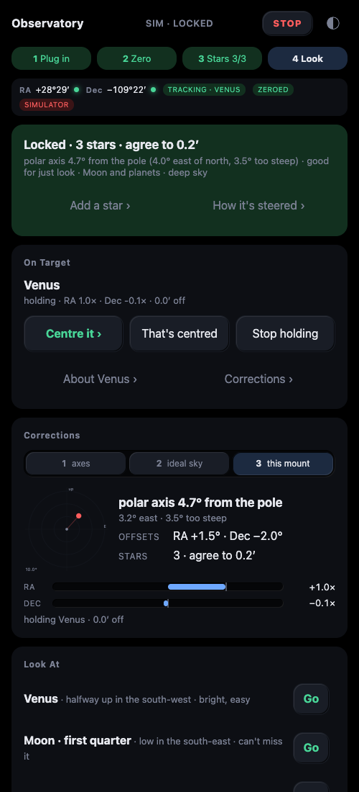
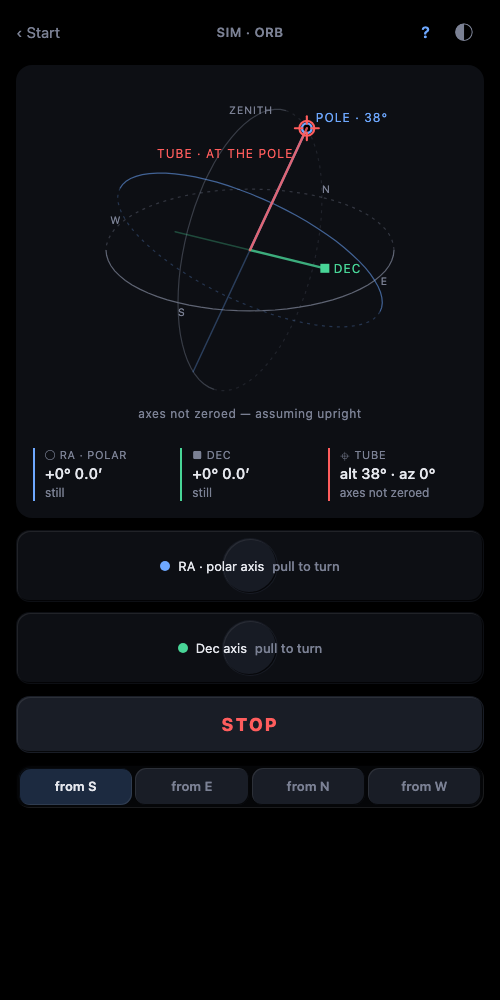

Observatory
Telescope control in Elixir: a mount driver, a Phoenix LiveView controller a phone opens, and a Nerves image for a Pi. Notes from building it.
Observations
Pictures from the telescope, a page per night. Latest: Night of 3 October 2026, 9 pictures.
-

The Moon we couldn't go to, and a Pi that solves its own plates
The last Go To of the first field night was refused as past the meridian, with nothing in the way. Underneath was a mount that reaches every star two ways, a check that was right on one side of the pier, and a hold with no limit at all. Then the box, which had never solved a photo itself, learned to: in Elixir, on a Pi 3.
-

Up is up: steering a telescope by what you see
When I push up while looking through my telescope, the stars should move up. That turned out to be a lot harder than it sounds.
-

Finding the Moon with a crooked telescope, a phone, and an AI
I set up my telescope badly on purpose, took pictures through the eyepiece with my phone, and had an AI figure out where it was pointing. It found the Moon. It also turned out to be aiming at the wrong one.
-

Finding the axes with one camera
A webcam watches the mount turn a few degrees on each axis. Block-matching optical flow, a 2-D pivot fit that works, a 3-D fit that wanders 30° between sweeps, and an honest review of why. An experiment, not a calibration.
-

Observatory: a telescope you just plug in
An EQ6-R, an EQDIR cable, and a Phoenix LiveView page a phone opens. Plug in, zero, three stars, look. What got built, how tonight goes, and the three bugs that would have ruined it.
-

Star Align: a mount set down anyhow
A geometric model of a German equatorial with the polar axis anywhere, fitted from two or three stars centred by eye, and a tracker that holds a target through it on both axes. No Polaris, no level tripod.
-

The orb
The mount's geometry as a live 3-D gizmo: polar axis, Dec axis, tube, the celestial sphere, drawn server-side as SVG from the driver's 250 ms snapshot. Why it exists and how it's made without JavaScript.